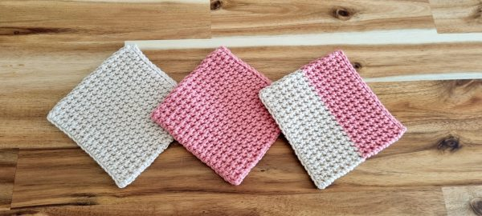
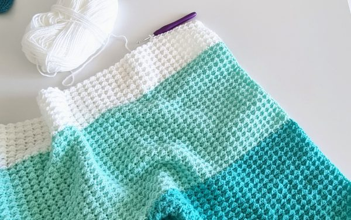

---Projects---
Project One: Crochet Coasters
Use a 4 mm hook
Ch 19 (or any amount for prefered length)
Row 1: HDC in second Ch from hook and across the row. (18)
Row 2: Ch 1, turn your work vertical as pictured below. Starting with Thermal Stitches. Insert hook into back loop + the unworked chain loop on a row below) and work a HDC in the first St and every St across the row. (18)
Row 3: Ch 1, turn vertical. Th HDC (this time back loop + two loops on row below) in first St and every St across the row. (18)
Row 4-28: repeat row 3 until you reach your desired size.
Row 29 (final row): Ch 1, tighten the chain slightly to make it smaller. Insert your hook under the third loop PLUS the two loops on row below as you did in previous rows. You will have 6 loops on your hook, work a slip stitch. Continue with slip stitch across the row. Please watch the video demonstration below.
Fasten off and weave in all ends!
Video Example
Project Two: Baby Blanket
Use a 5 mm or a 6 mm hook
Ch 110 (or any even number for prefered length)
Row 1: Switch to a 5mm crochet hook. Starting in the second Ch from hook work a *Sl St, then a HDC in the next chain. Repeat from * across the row. Work a Sl St in the last St. Ch 1 and turn.
Row 2: Work a *Sl St in the first St, then a HDC in the next stitch. Repeat from * across the row. Work a Sl St in the last St. Ch 1 and turn.
Rows 3-123 (or as long as you want): Repeat row 2 until you reach your desired size! Fasten off and weave in all ends.
Fasten off and weave in all ends!